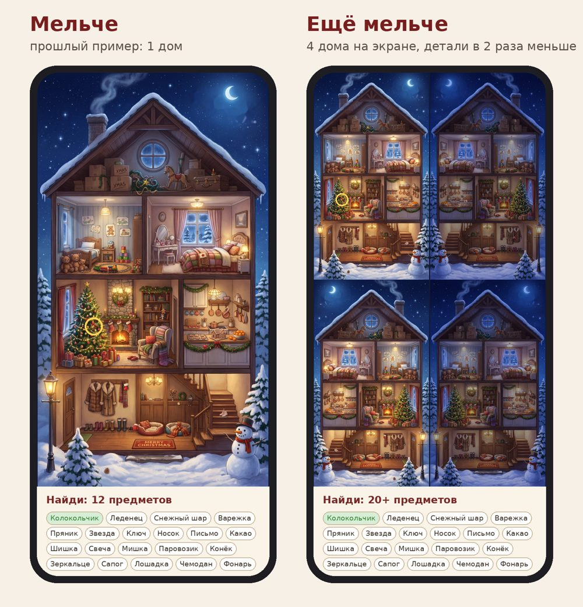

- Одна огромная ярмарка, которая растёт каждый день. Каждый день открывается новый торговый ряд. К 31 декабря собирается вся панорама, а в ней спрятана твоя семья.
- Свои герои. В начале игрок собирает семью: себя, вторую половинку, детей, собак и котов, и даёт им имена. Герои гуляют по ярмарке, их имена на вывесках лавок, вся семья в финале.
- Мелко и с зумом. 30 предметов на экране, как в примере «ещё мельче». Двумя пальцами можно приблизить и разглядеть каждую мелочь.
- Найденное идёт в дело. Игрушки вешаются на ёлку, наряды надеваются на героев и собак. Видно, как ёлка наполняется день за днём.
- Главный вирусный приём: «Подари игру». Человек настраивает игру под близкого (имена, собаки, тёплое послание) и отправляет ссылку. Получатель играет, а в финале видит послание. Открывается прямо в Telegram.
- Вся страна на одной ярмарке. В толпе на твоей ярмарке гуляют семьи настоящих игроков, а друзья, которых ты позвал, стоят у твоей лавки. Есть общий счётчик «сегодня нарядили 48 213 ёлок» и соревнование городов.
- Деньги — с массовых подарков. Бесплатно подарить может каждый. Платно — «Подарок-премиум» (299–499 ₽), печатный плакат с семьёй, спонсорские лавки и реклама за подсказку. Чем больше дарят, тем больше зарабатываем.
Что узнал о жанре
«Поиск предметов» — большой и денежный жанр. Его главная аудитория — женщины, то есть ровно Нина и её подруги.
Что работает в лучших играх
- Звёзды и повторное прохождение (June's Journey). За сцену дают до 5 звёзд, у каждой звезды награда. Игроки перепроходят сцену, чтобы собрать все.
- Мета-цель за пределами поиска. В June's Journey игрок отстраивает свой остров на заработанное, и именно стройка открывает новые сцены. У нас этим станет ёлка и гардероб героев.
- Живой мир вместо статичной картинки (Hidden Folks). Почти каждый объект реагирует на нажатие и издаёт смешной звук, а все звуки автор записал своим голосом. Это дёшево и даёт игре характер.
- Загадка вместо названия. В Hidden Folks цель описана подсказкой с шуткой, а не словом «Шапка». Игрок ищет не картинку, а маленькую историю.
- Никаких штрафов и таймеров. В Hidden Folks таймеры и сложные задания вырезали: игроков на тестах они раздражали. Можно тыкать куда угодно без наказания.
- Подсказка указывает область, а не точку. Игрок находит предмет сам и получает своё «ага!».
Как правильно прятать предметы
- Мелкие предметы ставить на передний план, средние в середину, крупные вглубь. Размеры, формы и цвета должны быть разные.
- Раскладывать равномерно: без скоплений, рядов и пустых зон.
- Каждый предмет должен быть на своём месте: варежки в лавке одежды, а не в пекарне. Из нескольких предметов можно сложить маленькие сценки.
- Раздражают слишком тонкие или крошечные предметы, захламлённые зоны и повторы из прошлых сцен.
- Сложность регулируется контрастом: яркий предмет на однотонном фоне найти легко, похожий по цвету на фон — трудно.
Что вирусится в декабре
Elf Yourself: личное лицо в праздничном ролике
Рекламный проект OfficeMax 2006 года: загружаешь лицо своё или друга и получаешь видео с танцующим эльфом. Он живёт только в праздники, и за всё время создано больше 2 млрд эльфов. Когда в 2008 году ввели регистрацию, трафик упал до 56 млн визитов.
Вывод: людям нравится видеть в празднике себя и близких, а любое лишнее действие на входе убивает рост. Поэтому у нас никакой регистрации.
Wordle: одно задание в день и карточка без спойлеров
Одна загадка в день, одна на всех, а делятся квадратиками без ответа. За пару месяцев игра выросла с 90 игроков до 2 млн.
Вывод: одна сцена в день, общая для всех, и красивая карточка результата для чата: «День 12 · 30/30 · 4:12 · 🎄🐶🎁».
Адвент-календари в Telegram
Бренды (ВТБ и другие) каждый декабрь запускают мини-приложения в Telegram, где каждый день открывается новая ячейка. Механика знакомая, людям не надо ничего объяснять. Слабое место типичного календаря в том, что ячейка просто открывается. У нас за каждой ячейкой настоящая игра.
Концепция
Сюжет
Главная героиня (или герой, кого выбрал игрок) идёт на новогоднюю ярмарку за всем, что нужно к празднику: игрушками на ёлку, нарядами себе, одёжкой для собачек, вкусностями и подарками. Каждый день она проходит новый торговый ряд. 31 декабря вся семья в обновках стоит у ёлки, которую нарядили найденными игрушками, и за окном салют.
Ярмарка растёт каждый день
Вместо 31 разной картинки получается одна большая панорама, которая с каждым днём расширяется. Это даёт ощущение путешествия. А в конце у игрока остаётся огромный плакат «вся ярмарка», где спрятана его семья, и им хочется поделиться.

Один день в игре
новый ряд ярмарки
зум, звуки, загадки, толпа из игроков
найденное идёт в дело
карточка в чат и «Подари игру»
Конструктор семьи
На старте игрок нажимает на карточки и собирает свою компанию. Это занимает меньше минуты:
| Кто | Варианты |
|---|---|
| Я | женщина / мужчина, 4–5 причёсок и цветов волос |
| Вторая половинка | нет / есть, те же варианты |
| Дети | 0–3: мальчик или девочка, малыш или школьник |
| Питомцы | 0–3: шпиц рыжий, той пшеничный, корги, лабрадор, такса, дворняжка, кот рыжий, кот серый |
| Имена | у каждого героя, по желанию |
Где появятся герои: гуляют по ярмарке, и их можно найти как бонус («Найди Нину и собак»). Имена на вывесках («Лавка Нины», «Пекарня у Никиты»). Найденные наряды надеваются на них. Вся семья в финале у ёлки и на карточке результата.
Фишки, которые будут цеплять
По порядку важности. Первые четыре обязательные, остальные по возможности.
«Подари игру» главное
Кнопка «Сделать игру для близкого»: выбираешь его героев, собак, имена и пишешь послание. Получаешь ссылку и шлёшь её в Telegram или WhatsApp. Получатель видит «Никита приготовил для тебя Новый год», играет, а в финале открывается послание. Каждый, кто прошёл игру, получает предложение подарить её кому-то ещё. В декабре все ищут, что бы такое тёплое отправить, и это готовый повод.
Своя семья в игре обязательно
Свои имена и свои собаки превращают игру из «очередной» в «про нас». На этом держался Elf Yourself.
Ёлка, которая наряжается обязательно
Каждая найденная игрушка улетает на ёлку. К 31-му ёлка ваша, собранная своими руками. Это наш «остров» из June's Journey: цель больше одной сцены и причина вернуться завтра.
Карточка дня для чата обязательно
Красивая картинка: твоя семья, «День 12 · 30/30 · 4:12», ёлка с прогрессом и без спойлеров. Одна кнопка «Поделиться». Это как квадратики Wordle, только с собаками.
Живая ярмарка вау
Нажимаешь на продавца, и он кричит «Пряники горячие!». Нажимаешь на собаку, и она гавкает, снеговик чихает. Звуки можно записать твоим голосом, как в Hidden Folks. Это дёшево и смешно, а Нина узнает голос.
Загадки вместо названий вау
Вместо «Шапка»: «Шапка, которую продавщица считает слишком модной для этой зимы». Шрифт крупный, есть кнопка «просто покажи название» для тех, кто спешит.
Собаки-воришки вау
В каждом ряду твои собаки утащили один предмет и спрятались с ним. Найдёшь собаку, и она отдаст его. Бонусный предмет, который есть только у этой семьи.
Три звезды за день реиграбельность
Звёзды за «без подсказок», «быстрее 5 минут» и «нашёл всех героев». Ради звёзд перепроходят, как в June's Journey. Звёзды открывают праздничные наряды героям.
Финал-фильм 31 декабря вау
Вся семья в найденных нарядах у вашей ёлки, гирлянда загорается, салют, падает снег, имена на экране, «С Новым годом, Нина!». Ролик собирается прямо в браузере из героев игрока, поэтому у каждого свой. Для Нины сделаем отдельную, особенно красивую версию.
Без регистрации и установки рост
Это ссылка, которая открывается в браузере и прямо внутри Telegram. Прогресс хранится в телефоне, а подарок — это короткая ссылка. Маленький сервер хранит подарки, счётчики и толпу.
Играем все вместе: свой и чужой прогресс
Цель — сотни тысяч человек в декабре. Для этого игра должна ощущаться как общий праздник, а не одиночная головоломка.
Толпа из настоящих игроков вау
Прохожие на ярмарке — это семьи других игроков: их герои, собаки и имена. Каждый раз толпа новая. Друзья, которых ты позвал, гуляют у твоей лавки, и их можно найти как бонус: «Найди Свету с корги». Люди будут звать друзей, чтобы увидеть их у себя в игре, а друзья — чтобы появиться у тебя.
Прогресс близких обязательно
Кто подарил игру, видит, как идут дела у получателя: «Нина нашла 22 из 30, ёлка наряжена на 70%». В своей компании видно, кто сегодня уже прошёл ряд и за сколько, и можно отправить «Догоняй! 🎄». Это лёгкое соревнование между своими, без чужих рейтингов.
Общий счётчик и цель страны
На главном экране: «Сегодня нарядили 48 213 ёлок, всего найдено 3,2 млн игрушек». Общая цель на декабрь: «Миллион ёлок к Новому году». Когда её достигнут, у всех на ярмарке случается салют и открывается секретный ряд.
Битва городов
Игрок указывает город, и каждый найденный предмет идёт в копилку города: «Калининград обогнал Тулу!». Это повод написать местным пабликам и СМИ, а городские чаты сами разносят игру.
Статистика по предмету, как в Wordle
Сцена у всех одна, поэтому после прохождения видно: «Варежку быстрее тебя нашли только 18% игроков», «Эту шапку не могут найти 40% — а ты нашла!». Хочется похвастаться.
Как собрать сотни тысяч
Сама собой игра не разойдётся. Нужно несколько каналов сразу.
| Канал | Что делаем |
|---|---|
| «Подари игру» | Главный двигатель: каждый игрок получает повод отправить игру 1–3 близким. |
| Яндекс Игры | Публикуем там же: большой готовый поток игроков. Аудитория площадки — 58% женщин, 38% старше 55 лет, то есть ровно аудитория «поиска предметов». |
| Собачники и кошатники | В игре 8 пород, и под каждую делаем ролик «Найди своего шпица на ярмарке» для пород-сообществ, чатов и пабликов. Хозяева питомцев делятся всем, где есть их порода. |
| Короткие видео | Рилсы и клипы: «Найди варежку за 10 секунд», «Я нашла, а ты?». Через ChatPlace Virale, который у тебя уже есть, их можно делать пачками. |
| Мамские и семейные блоги | Посевы у блогеров о семье, детях и собаках с личной ссылкой «Подари игру». |
| Городские паблики | Битва городов даёт местным СМИ и пабликам готовую новость. |
Где заработать
Всё строится вокруг «Подари другу»: каждый подарок — шанс продать премиум или плакат. Отсортировано по важности.
«Подарок-премиум» массовый
Подарить игру можно бесплатно. За 299–499 ₽ подарок становится особенным: персональный финал-мультфильм с именами, послание голосом дарителя (записывает прямо в браузере), имя получателя на главной вывеске ярмарки, без рекламы. Оплата картой или через СБП на сайте через твоё ИП (ЮKassa, CloudPayments или Робокасса, они же отправляют чеки).
Печатный плакат «Наша ярмарка» высокий чек
После 31-го у игрока остаётся огромная панорама ярмарки с его семьёй, спрятанной в толпе, и найденными вещами. Её можно заказать печатным плакатом или пазлом за 990–2 490 ₽ через печать по требованию, с доставкой от партнёра. Это физический подарок, который останется после праздника.
Спонсорские лавки
Бренды покупают лавку на ярмарке: вывеска, их товар как один из предметов поиска, промокод, который выпадает, когда предмет найден. Неделя в одном ряду. Продаём, когда будут первые цифры игроков. Например, кофейни, кондитерские, зоомагазины, а для собачьей лавки — бренды кормов.
Реклама за подсказку
Если подсказки закончились, можно посмотреть короткий ролик и получить ещё одну. На Яндекс Играх это даёт доход от показов, на своём сайте — через Рекламную сеть Яндекса. Никакой навязчивой рекламы посреди игры: она убивает удовольствие.
| «Подарок-премиум» | 100 тыс. игроков × 1–2% купят × 349 ₽ | 350–700 тыс. ₽ |
| Плакаты | 0,2–0,5% игроков × ~800 ₽ маржи | 160–400 тыс. ₽ |
Из этого вычесть комиссии платёжки, налог ИП, рекламу и печать. Реальная конверсия станет известна только после запуска. Всё зависит от того, сколько людей подарят игру друг другу, поэтому главная метрика — число подарков.
Как сделаем, чтобы было мощно
- Фон рисует нейросеть, предметы вставляем мы. Ярмарку генерируем через ChatPlace без предметов, а 30 предметов рисуем отдельно и вклеиваем сами. Так они остаются чёткими при зуме, мы точно знаем, где каждый лежит, и можем регулировать сложность.
- Высокое разрешение под зум. Картинка в 2–3 раза больше экрана с учётом его плотности, и при приближении она не мылится. Если нейросеть не даст нужного размера, генерируем по частям и склеиваем.
- Герои в одном стиле. Набор мультяшных фигурок (взрослые, дети, 8 питомцев) в двух позах: «гуляет» и «у ёлки». Из них в коде собирается любая семья.
- Звуки. Короткие записи с телефона, твоим голосом или голосами друзей. Плюс тихая новогодняя музыка, которую можно выключить.
План по датам
Чтобы 1 декабря всё уже работало, а Нина ни о чём не догадалась.
Решения за тобой
Источники
- Wooga: June's Journey surpasses $1 billion revenue
- Game Developer: June's Journey breakdown
- Game Developer: Building thousands of tiny interactions into Hidden Folks
- Tampere PlayLab: Hidden Folks review
- Absolutist: Hidden object scene — how to place items
- Как Azur Games подняла удержание в Hidden Objects 2
- Elf Yourself (Wikipedia)
- Smithsonian: Why Wordle went viral
- Sostav: адвент-календарь ВТБ в Telegram Mini Apps
- PixelPlex: вирусные механики в Telegram-играх
- Яндекс Игры: для разработчиков (аудитория)
- Sostav: доходы браузерных игровых площадок
- Partnerkin: сколько зарабатывают HTML5-игры
- Код: разбор Telegram Stars
- Код: голоса в VK Mini Apps